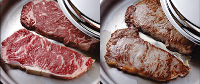
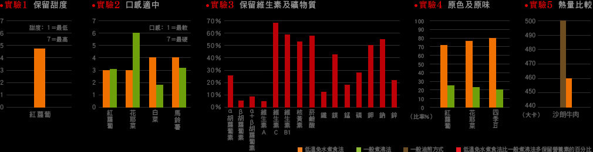

【原味複合金鍋6大特色，鎖住營養，烹調美味】
健康 Health
原味複合金鍋系列獨有的「Vitalok ™低溫免水煮食法」是最健康的烹煮方式，它可以保留食物天然的原汁原味，鎖住更多營養素，讓甜度、口感都更加美味；此外，油煙不再使人困擾，健康多了一份保障，也不需時常緊盯爐火或翻攪食物，你會發現做菜從此變得更從容優雅！
- VitalokTM 低溫免水煮食技巧
-
只要透過Vitalok™ 低溫免水煮食法的簡單步驟，健康又美味的佳餚就能輕鬆上桌！
- 依食材加少量水
- 預熱→冷油→放食材→蓋鍋蓋
若食材為肉類，則不需添加任何水分或油脂；若為含充足水分的新鮮蔬果，只要將清洗好的蔬菜放入鍋中，就有足夠的水分進行低溫免水煮食法；若為不含水分的米食、麵條、乾豆、根莖類蔬菜等，則需加適當的水量進行料理。
 - 數字會說話
-
根據研究，經由Vitalok™ 低溫免水煮食法所烹煮的食物，不論在甜度、口感、保留維生素及礦物質、維持食物原色及原味等，都比一般煮沸法烹煮更加出色。此外，利用Vitalok™ 低溫免水煮食法料理的食物，也較一般油炸方式降低了熱量，讓你吃得更健康！


智能 Intelligent
原味複合金鍋系列採用密實鋼材，以獨特蒸氣鎖進行食物料理，鍋蓋與鍋身精密的製成工藝，可讓鍋中的水分遇熱成為蒸氣後，在鍋蓋與鍋身間形成一道水膜，成為緊密的蒸氣鎖。蒸氣鎖能利用食物中的天然水分進行烹煮，不需加水或油就能進行料理，不僅能省下調味料的費用，更保留了食物天然原味與豐富
- 如何形成蒸氣鎖？
-
-
蒸氣溢出轉小火
待鍋蓋邊緣溢出蒸氣時，請將爐火調成小火。
當鍋子達到適宜的溫度時，蒸氣即會停止溢出，若蒸氣仍不斷溢出，需將爐火再轉成文火；若最小的火力溫度依舊太高，則須在鍋子下方加用隔熱板。
-
旋轉鍋蓋形成蒸氣鎖
將鍋蓋旋轉一圈形成蒸氣鎖。
烹調過程應避免打開鍋蓋，以免破壞蒸氣鎖；若想看食物是否煮熟，可稍微掀起鍋蓋，若食物尚未煮熟，請立刻蓋上鍋蓋，並將爐火轉成中火烹煮約1 分鐘以重新形成蒸氣鎖，再調回小火烹煮。
-
蒸氣溢出轉小火
經濟 Economy
鍋身內部獨特散熱紋處理與鍋底鍛紋設計，能讓熱源均勻而快速地傳導，並因而發展出獨特的「層疊煮食法」，藉由小鍋疊大鍋方式，只需使用中、小火，熱力就能從最下層的鍋子傳送至最上層的鍋子，同時完成多道菜餚。的營養成分！
- 數字會說話
-
實驗：節省熱能
透過熱能消耗的實驗數據證實，以完成相同的料理測試，層疊煮食法比起傳統煮食法大幅節省約25％的瓦斯能源，讓料理進而更符合節能的環保概念，成為省時、省力的烹調好幫手。以兩口瓦斯爐做測試，完成相同的料理，層疊煮食法比傳統煮食法節省了約25% 的熱能。
- 層疊煮食技巧
-
- 大鍋在下、小鍋在上：將較小的鍋具疊放在較大的鍋具上方。
- 下層體積大、重量較重：下層鍋具放置份量多、體積大、重量重且烹煮時間較長的食物如肉類、雞鴨或燉湯。
- 上層體積小、重量較輕：上層鍋具放置份量少、體積小、重量輕且烹煮時間較短的食物如蔬菜、醬汁、加熱剩菜或保溫食物。
- 中火開火：下層鍋具以中火加熱，等蒸氣鎖形成後，再轉成小火烹煮。
- 蒸氣鎖形成後開始層疊：小鍋欲疊至大鍋上層時，先用另一爐火將小鍋預熱至形成蒸氣鎖，再移至大鍋上；若僅要利用小鍋融化、加熱或保溫食物，則不需等小鍋形成蒸氣鎖。
- 勿將小鍋放入大鍋中煮食：除焙碟及鋼杯外，請勿將小鍋直接放入大鍋中煮食。
- 消耗熱能
-
層疊煮食法881大卡傳統煮食法1193大卡
品質 Quality
原味複合金鍋系列採用18 ／ 8 不銹鋼，是醫療器材等級的材質，也是最穩定安全的鍋具鋼材之一，可耐高溫、好清洗並擁有極佳的抗銹、抗凹陷、抗磨損與抗污能力；此外，多層式結構的設計，導熱快速均勻，適用於市面上大多數爐面。
- 導熱快速均勻的多層式結構
-
結合18 ／ 8 不銹鋼與多種金屬的多層式結構，導熱快速均勻，能大大縮短烹飪的時間，而且適用於大多數爐具，是現代人最便利的烹調幫手！
透視醫療級鋼材─ 18/8 不銹鋼18/8 不銹鋼由於可耐高溫、好清洗，且擁有極佳的可塑性、防銹、防凹陷、防磨損與防污能力，是外科手術器具及食物處理器專用的材質，原味複合金鍋系列也特別採用此種鋼材。18/8 不銹鋼又可稱為304 系列的不銹鋼，含有18～20% 的鉻及8～10% 的鎳，因此也稱為18/10 不銹鋼，二者只是名稱不同，材質完全一樣。
最小 最大 鉻 18 20 鎳 8 10
貼心 Design
原味複合金鍋系列擁有許多貼心的人性化設計，讓你在烹調料理時更輕鬆、安心；此外，晶亮新穎的美觀外型，使鍋具成為廚房最美麗的擺設。
- 人體工學：鍋柄上設計拇指施力點，及內採不銹鋼支架，握拿更輕鬆不燙手。
- 耐高溫：鍋柄、鍋耳及鍋蒂採用隔熱式樹脂，可耐高溫達200℃，鍋柄加裝專利阻熱環與鍋蒂的護指設計，可避免手指直接接觸熱度，確保烹調安全。
- 不溢漏：獨特鍋緣設計，傾倒湯汁不易滴落外溢。
- 好清洗：鏡面處理鍋身與鍋蓋，清洗容易；內部散熱紋處理更可防刮痕。
- 好收藏：可反扣收藏的鍋蓋與鍋柄的懸掛孔，節省儲藏空間。

完整 Complete
6 只鍋具，有著 21 項完整組件，每項都有獨特的烹調功能，搭配使用能變化出各式各樣的組合，符合 8 大料理模式，為你創造更多樣的烹調選擇。有了這套鍋具，作菜不但輕鬆、充滿樂趣，起鍋的每道佳餚更兼具滿滿的營養與美味！